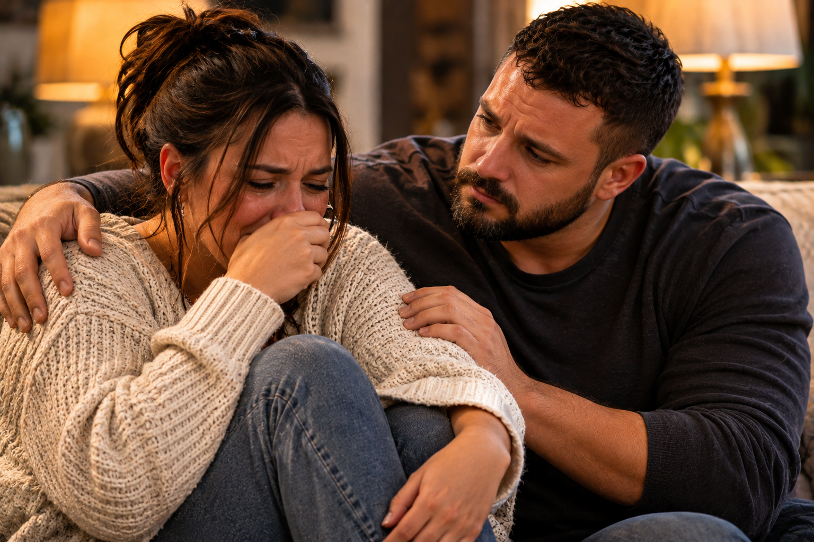
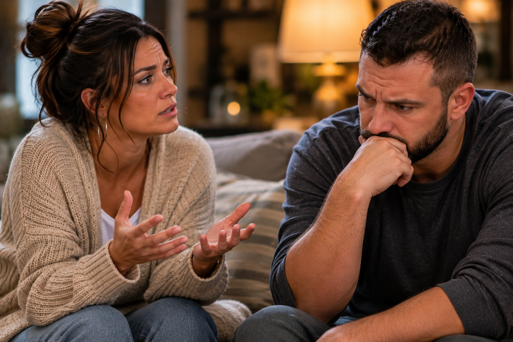
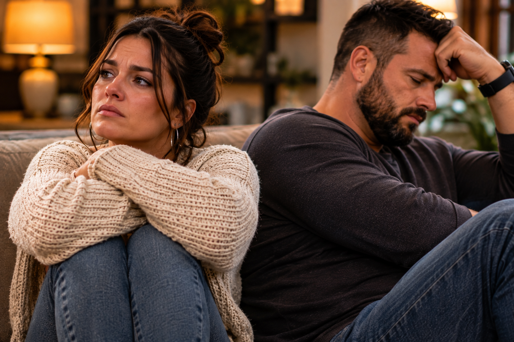
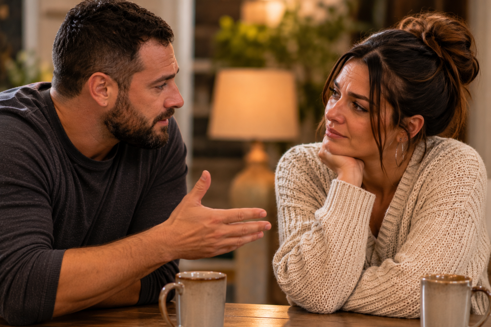
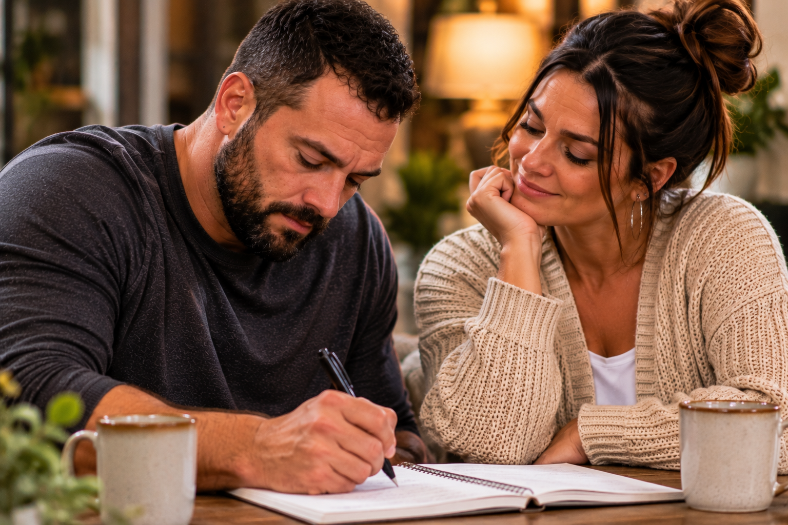

One of the hardest things to recognize in a relationship is that you may not be the only person struggling.
When we are hurting, our own emotions naturally become the center of our attention. We remember what was said, how something made us feel, and what we wish the other person had done differently. We think about the moments when we felt ignored, disappointed, rejected, or misunderstood. We may spend so much time trying to explain our own experience that we fail to recognize someone else may be struggling just as deeply.
This does not mean our pain is less important. It means that another person’s pain does not automatically disappear simply because we have our own.
Two people can sit in the same room, both feeling alone, each believing the other should understand what they are going through. One may be waiting for an apology, while the other is waiting for acknowledgment. One may feel emotionally exhausted from trying to communicate, while the other feels exhausted from believing that nothing they say is ever enough.
Neither person may realize how much the other is carrying.
And that is where a relationship can become painfully complicated.
Two Different Experiences, One Relationship
Imagine two people who have been struggling to connect.

The other feels that their efforts are being overlooked. They work, manage responsibilities, make plans, and try to contribute to the relationship in practical ways. Yet they feel as though those efforts are rarely enough to satisfy their partner.
When they finally discuss the problem, both begin describing what has been missing.
One says, “I just want to feel like you want to spend time with me.”
The other responds, “I do spend time with you. I make time whenever I can.”
The first person hears that response as defensiveness. The second hears the original statement as an accusation that their efforts do not matter.
The conversation begins to move away from what each person is feeling and toward proving whose experience is more accurate.
But consider what may be happening beneath the surface.
One person is trying to communicate a need for emotional connection. The other is trying to communicate that their efforts deserve recognition. Both may be asking for something meaningful, but neither is hearing the request beneath the frustration.
The relationship becomes a place where both people are asking to be understood while struggling to understand one another.
Pain Can Make Us Focus on What We Are Missing

We remember the unanswered message, the conversation that never happened, the promise that was not fulfilled, and the moment we needed support but did not receive it in the way we expected.
Those experiences matter. Repeated disappointment should not be dismissed as overthinking or sensitivity.
However, when our attention becomes completely focused on what is missing, we may stop noticing what is still being offered.
Someone may be making an effort in ways we do not recognize. They may be trying to balance responsibilities, manage personal difficulties, or make changes that are not immediately visible. Their efforts do not necessarily meet every need, but that does not mean they are meaningless.
The opposite can also happen.
A person may become so focused on everything they contribute that they stop recognizing the emotional needs of the person beside them. They may point to bills paid, responsibilities handled, activities planned, or practical support offered as evidence that they are doing enough.
Those contributions may be genuine and important. But they do not automatically resolve emotional disconnection.
A relationship can contain real effort and still contain real disappointment.
Recognizing one does not require denying the other.
When Both People Feel Unappreciated

A person who believes their efforts go unnoticed may stop offering as much. They may become less enthusiastic about making plans or less willing to initiate conversations because they feel there is little point in trying.
The other person may notice the change and interpret it as a loss of interest.
They may begin asking why the relationship feels different, not realizing that the distance developed after one partner began feeling unrecognized.
Meanwhile, the person who feels unappreciated may wonder why nobody notices how much they have been carrying.
Both people begin reacting to the very disconnection they want to escape.
This is one reason relationships can become trapped in repeated patterns. A person responds to what they believe is happening, the other responds to that reaction, and neither pauses long enough to examine what started the cycle.
Sometimes what looks like indifference is discouragement. Sometimes what looks like constant dissatisfaction is an attempt to communicate an unmet need. Sometimes what looks like withdrawal is a person who no longer knows how to approach the conversation.
These possibilities deserve consideration, but they should not be treated as automatic explanations. We still have to ask, listen, and pay attention to what people actually communicate.
When Pain Becomes a Competition
There is a dangerous point in a relationship when two people begin comparing their suffering.
One says, “You have no idea what I have been dealing with.”
The other responds, “You think you are the only one going through something?”
Suddenly, the conversation is no longer about understanding. It becomes a competition over whose pain deserves more attention.
Both people may have legitimate reasons for feeling hurt, but neither feels safe enough to acknowledge the other.
The problem with comparing pain is that it creates the impression that only one person can be struggling at a time.
That is not how human relationships work.
One person’s disappointment does not cancel out another person’s exhaustion. One person’s fear does not make another person’s frustration irrelevant. Two people can experience the same situation differently and both walk away carrying something painful.
There may be moments when one person needs more immediate support. There may also be situations where one person’s behavior has caused harm that requires direct accountability. Recognizing that both people are hurting does not mean every action is equally harmful or that responsibility must always be divided evenly.
It simply means that pain should not become a reason to stop listening.
We do not have to win the argument over who has suffered more before we can begin addressing what is happening.
When One Person’s Pain Is Difficult to See

Some people cry easily. Others become quiet. Some want to talk immediately, while others need time to process what has happened. Some express disappointment through frustration, and others bury their emotions beneath work, responsibilities, or distractions.
Because people respond differently, we can sometimes overlook pain that does not look familiar to us.
We may assume someone is unaffected because they are not crying. We may believe someone does not care because they have stopped bringing up the same concern. We may interpret silence as acceptance when it is actually exhaustion.
But we should not assume that someone is hurting simply because they behave differently either. Their experience belongs to them, and they deserve the opportunity to explain it.
The important thing is to remain open to the possibility that there is more happening than we can see.
A person who appears strong may still need reassurance. Someone who seems emotionally distant may be struggling to communicate. Someone who constantly takes care of others may have become accustomed to believing their own needs can wait.
We should never require someone to express pain in a particular way before we consider it worthy of attention.
Understanding Does Not Mean Excusing Everything

People sometimes respond poorly when they are overwhelmed. They may become impatient, defensive, withdrawn, or difficult to communicate with. Their circumstances may help explain why they are struggling, but those circumstances do not remove their responsibility for how they treat others.
The same is true for us.
Our past experiences, disappointments, fears, and frustrations may influence our reactions. They may help explain why certain situations affect us so deeply. But they do not give us permission to insult, intimidate, manipulate, or repeatedly disregard someone else’s boundaries.
Compassion should never require someone to tolerate mistreatment.
A healthy relationship must have room for understanding and accountability. Both people should be able to acknowledge their struggles while also recognizing when their behavior has caused harm.
Sometimes that means saying, “I was hurting, but I should not have spoken to you that way.”
Other times it means saying, “I understand that you were frustrated, but I cannot continue having conversations where I am being insulted.”
Both statements can be necessary.
Understanding someone’s pain does not mean abandoning your own well-being. It means recognizing that compassion and boundaries can exist together.
The Courage to Admit That You Are Hurting Too
Some people find it easier to point out what someone else has done than to explain what is happening inside themselves.
It can feel safer to express frustration than to admit disappointment. It may be easier to accuse someone of not caring than to say, “I am afraid that I am not important to you.”
Vulnerability can be uncomfortable because it requires us to communicate something that another person may not respond to in the way we hope.
But when we refuse to acknowledge our own pain, it often comes out through other behaviors.
We become impatient. We withdraw. We make comments that carry more meaning than the words themselves. We expect someone to recognize what we have not been willing to explain.
Sometimes we are asking another person to understand an emotion we have not fully admitted to ourselves.
That is not always intentional. We may genuinely be trying to make sense of what we feel.
Still, personal awareness matters.
It may require asking ourselves whether we are angry about what happened today or whether today’s situation reminded us of something that hurt us before. It may require recognizing that we need reassurance, rest, appreciation, or a more honest conversation.
The ability to say, “I am hurting, and I do not know exactly how to explain it yet,” can be the beginning of a much more meaningful conversation.
It does not make us weak. It makes us honest about where we are.
When Both People Need Something Different
Two people can love one another and still need different things during difficult moments.
One may want to talk through a disagreement immediately because unresolved tension makes it difficult to relax. The other may need time to settle their emotions before they can communicate without becoming defensive.
One may feel comforted by physical affection, while the other needs verbal reassurance. One may appreciate practical help, while the other places greater importance on uninterrupted time together.
Neither difference automatically means that someone is wrong.
The challenge is learning how to respond without treating every difference as rejection.
If one person needs space, they should communicate that they intend to return to the conversation rather than leaving the other person uncertain. If someone needs reassurance, they should try to express that need without demanding that the other person prove their love through constant availability.
Both people must recognize that their needs matter, but neither person’s needs should erase the other’s.
This requires compromise, communication, and a willingness to make adjustments.
It also requires recognizing when a difference is something that can be worked through and when a repeated pattern is causing harm that cannot simply be resolved through patience.
Love may bring two people together, but learning to care for one another requires more than good intentions.
Making Room for Both Stories
Perhaps one of the most important steps toward understanding is learning to hold two experiences in the same conversation.
Instead of immediately responding to a concern with a list of reasons why the other person is mistaken, we can first acknowledge what they are trying to communicate.
Instead of assuming that our own efforts should be enough, we can ask whether those efforts are reaching the person in the way we intended.
Instead of expecting someone to understand our disappointment without explanation, we can become more willing to communicate what we need.
And when we recognize that we have contributed to the hurt, we can take responsibility without turning the conversation into an argument about who is more at fault.
This does not mean every relationship can or should be repaired. Some situations involve repeated harm, broken trust, or an unwillingness to change. Understanding another person’s perspective cannot create accountability where someone refuses to accept it.
But when both people are willing to participate honestly, recognizing each other’s pain can change the direction of a relationship.
The goal is not to make both people feel equally responsible for everything. The goal is to understand what each person is experiencing, identify what needs to change, and determine whether both are willing to do the work.
Looking Beneath the Surface
Think about a disagreement that has stayed with you.
Have you spent more time thinking about what the other person did than considering what you were feeling when it happened? Have you recognized the ways your own disappointment may have influenced your response?
Consider whether you have ever dismissed someone’s efforts because they were not offered in the way you expected. Have you also experienced the frustration of trying to contribute while feeling that your efforts went unnoticed?
Ask yourself whether you have ever turned a conversation into a comparison of pain. Did you find yourself trying to prove how much you had suffered instead of listening to what the other person was trying to explain?
Most importantly, consider whether you can acknowledge another person’s hurt without dismissing your own.
You do not have to accept mistreatment to become understanding. You do not have to take responsibility for everything to acknowledge where you were wrong. You do not have to agree with someone’s interpretation of a situation to recognize that their feelings deserve to be heard.
Healthy understanding makes room for honesty, accountability, and boundaries.
It asks both people to look beyond the immediate disagreement and consider what has been happening beneath it.
Two People, Two Wounds, One Opportunity to Understand
Sometimes a relationship reaches a point where both people are tired of feeling misunderstood.
One is waiting for the other to recognize their pain. The other is waiting for the same thing. They may love each other, want the relationship to work, and still struggle to move beyond the hurt that has accumulated between them.
What makes those moments so difficult is that both may be waiting for someone else to make the first move.
But understanding cannot grow when both people remain committed to defending their own position.
Someone has to become willing to listen. Someone has to become willing to speak honestly. And both must eventually recognize that love cannot be sustained through unspoken resentment, repeated defensiveness, or the expectation that the other person should somehow know what needs to change.
Sometimes the most meaningful conversation begins when one person stops trying to prove that they are the only one hurting and becomes willing to ask, “What has this been like for you?”
That question does not erase the past or resolve every disagreement. But it creates room for something that may have been missing for a long time: the recognition that there are two people in this relationship, and both have experiences that matter.
Because there is another side to the story, and sometimes that other side belongs to someone who has been hurting quietly while we have been trying so hard to explain our own pain.
Understanding begins when we make room for both.